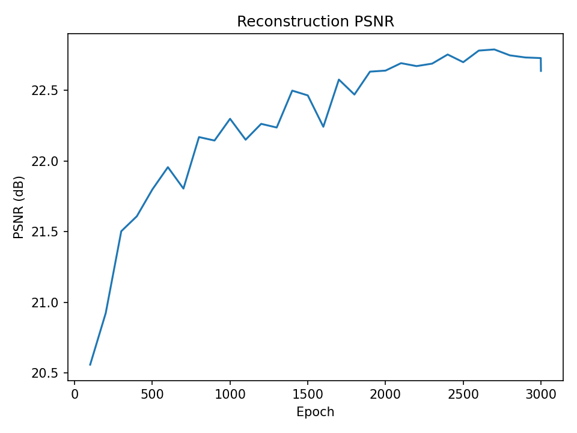
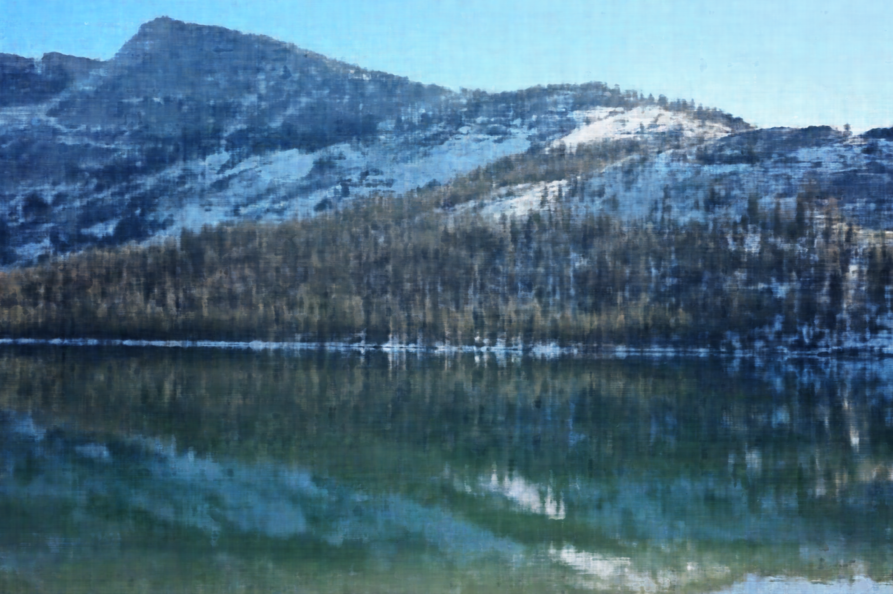
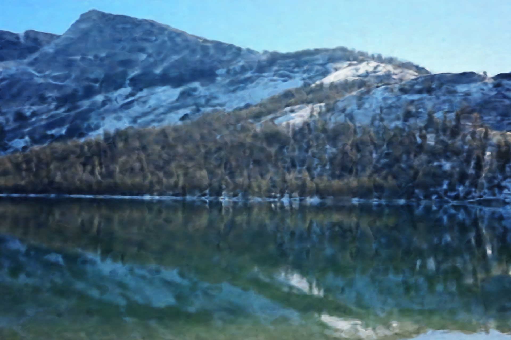
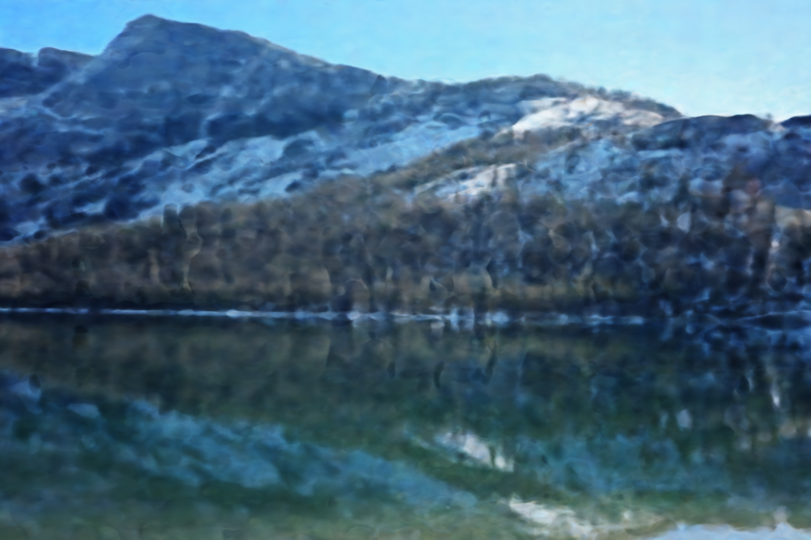
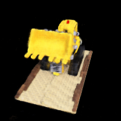
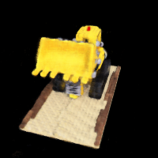
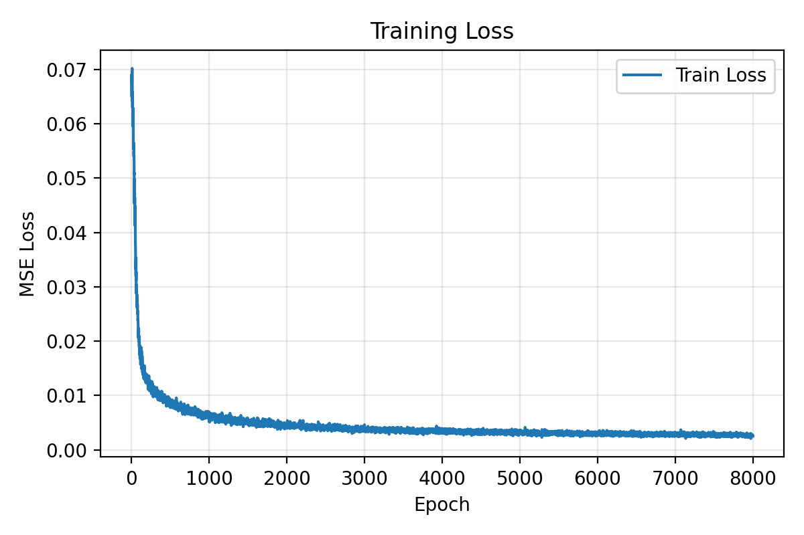
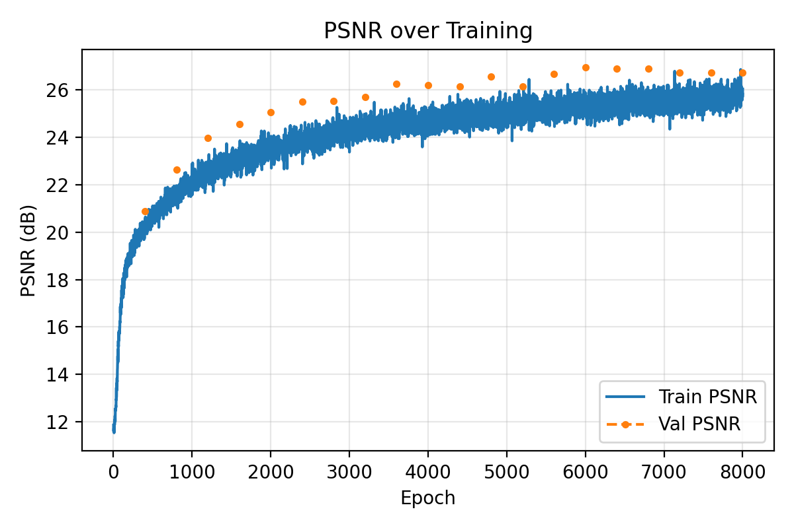

Part1.1: I use a fully connected multilayer perceptron (MLP) to regress RGB color from 2D image coordinates. The input to the network is a 2D pixel coordinate (u, v) in [0, 1]², which is first passed through a positional encoding with L = 10 frequency levels. For each dimension I apply sine and cosine at frequencies 2^k·π (k = 0 … 5), so the encoded feature has dimension 2 + 4L = 42 (original 2 coordinates plus 40 sinusoidal features). This 42-D vector is fed into a 4-layer MLP with three hidden layers of width 256: 26 → 256 → 256 → 256 → 3. Each hidden layer uses a Linear layer followed by a ReLU activation, and the final layer uses a Sigmoid activation to keep the predicted RGB values in [0, 1]. I train this network with Adam using a learning rate of 1×10⁻².
Part 1.2:
Part 1.3:
L = 10, width = 256
L = 10, width = 128
L = 6, width = 256
L = 6, width = 128
Part1.4: Train Loss and PSNR Loss
Part2.1: Create Rays from Cameras. I implemented three functions to convert between
different coordinate systems and generate rays. First, transform takes 3D
points in camera space, converts them to homogeneous coordinates, and multiplies by
the camera-to-world matrix to obtain world-space points. Then,
pixel2camera maps pixel coordinates (u, v) with depth
s back to camera space using the inverse intrinsic matrix
K⁻¹, following the pinhole camera model. Finally,
pixel2ray combines these steps: it converts pixels to camera points,
transforms them to world space, uses the camera center (translation part of
c2w) as the ray origin, and normalizes Xw − ro to obtain
unit ray directions rd. The function returns (ro, rd) for
each input pixel.
Part2.2: Sampling. I implement two routines, sample_rays and
sample_points, to draw training data from the multi-view images.
In sample_rays, I first treat all pixels from all training images
as a single 1D array and randomly sample N linear indices. Each index is
mapped back to an image id and (x, y) pixel coordinate, from which I read the
ground-truth RGB and compute sub-pixel centers by adding 0.5 to (x, y).
Together with the corresponding camera pose c2w and intrinsic
matrix K, I call pixel2ray to obtain the ray origins
and directions for those pixels, and normalize the directions to unit length.
In sample_points, given a batch of rays, I uniformly sample
n_samples depth values between near and
far using torch.linspace, then add a small random
jitter within each interval to perform stratified sampling. The 3D sample
points are finally computed as pts = ro + rd * t. This gives a
noisy but uniform set of samples along each ray in 3D space for NeRF
training.
Part2.3: Putting the Dataloading All Together
Part2.4: Lego Scene
For Part 2, I build a NeRF-style pipeline. A custom DataLoader reads
multi-view images and camera poses, then randomly samples 4096 pixels over all
training images, converts them to rays with pixel2ray, and takes
64 stratified samples between near = 2.0 and far = 6.0
along each ray. The MLP uses positional encoding (Lx = 10 for 3D points,
Ld = 6 for view directions) and an 8-layer 256-width network with a density
head (ReLU) and an RGB head (Sigmoid). I train with Adam (lr = 5×10⁻⁴) for
8000 epochs using MSE loss, track train/val PSNR, and finally render all test
views to create a spherical rotation GIF of the Lego scene.
left is after 100-epoch-trainning, middle is 500 epochs, right is 8000 epochs
 

train loss
psnr loss
Part2.5: My Own Scene
Compared to the original Lego NeRF implementation, this version is more
“engineered” and feature-complete. I still use a NeRF-style MLP with
positional encoding (Lx = 10 for 3D points, Ld = 4 for view directions) and
hidden width 256, a density head and an RGB head. However, the density branch
now uses a softplus activation instead of ReLU, which keeps
densities strictly positive and makes training more stable. Along each ray I
sample 96 points between near = 0.1 and far = 1.0
with stratified jitter; this higher sample count and tighter depth range
improve the quality of the volume rendering. I also introduce a cosine
annealing learning rate scheduler and a small weight decay
(5×10⁻⁴ → 5×10⁻⁶) for smoother convergence and better
generalization.
On the training side, I now keep a full history dictionary that
records epoch, training loss, training PSNR, and validation PSNR. The helper
function save_history_and_plots exports this data as both
.npz and .csv files and automatically saves loss and
PSNR curves to disk, so the whole training process can be inspected and
compared across runs. Every 200 epochs I render a validation view using
rays_from_val, compute PSNR, and save side-by-side comparisons of
ground-truth and predicted images. Finally, I save a checkpoint that includes
not only the model weights but also metadata such as K, image
resolution, sampling range, and positional encoding settings. Together with
the generic render_image_from_c2w function, this allows me to
reload the model later and render arbitrary novel views by simply providing
a new camera pose, without modifying the training script.
left is after 200-epoch-trainning, middle is 600 epochs, right is 6000 epochs